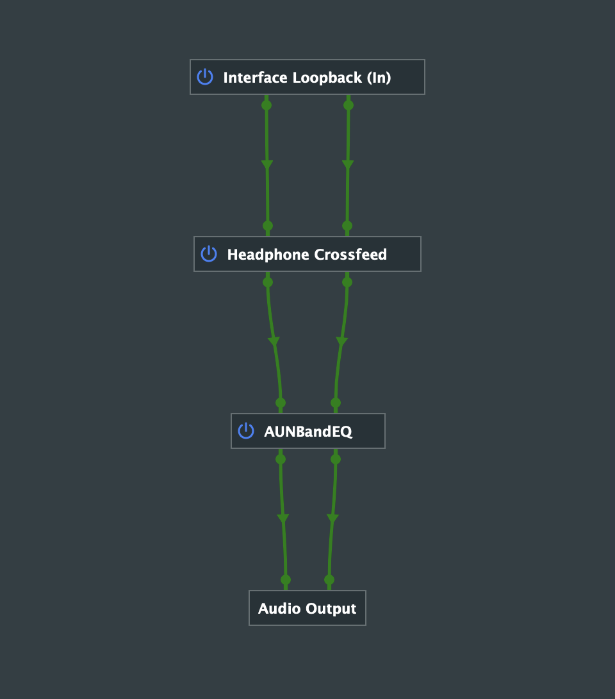
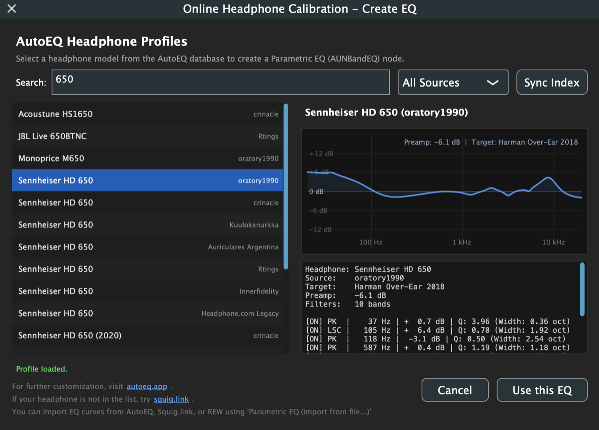
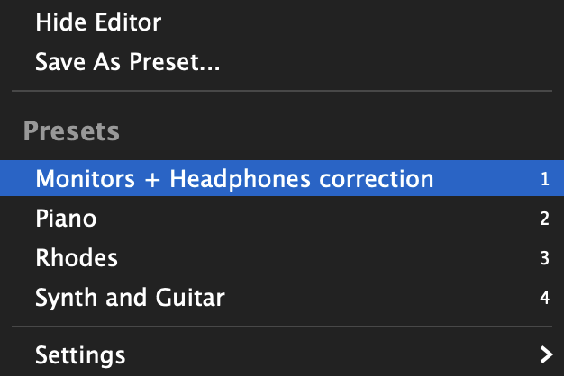
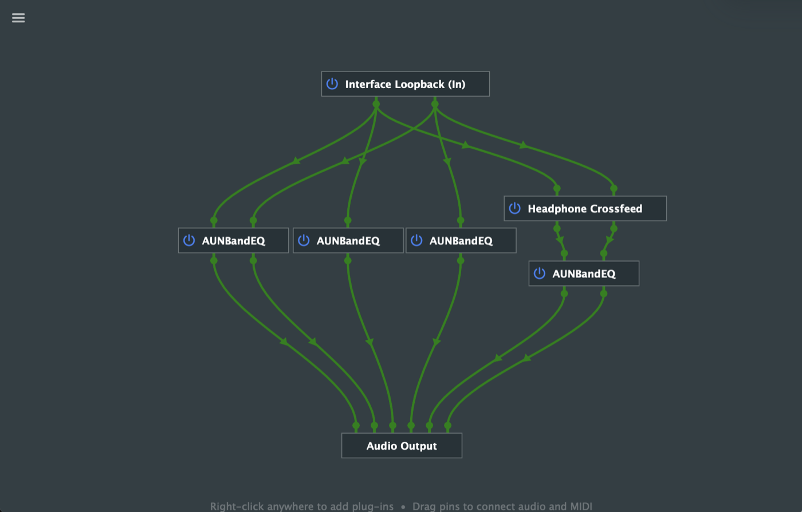
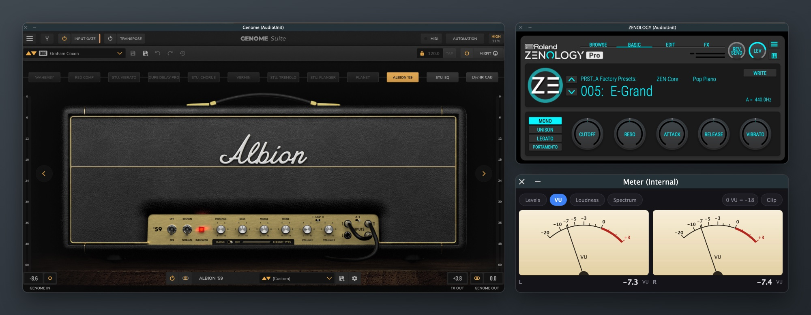
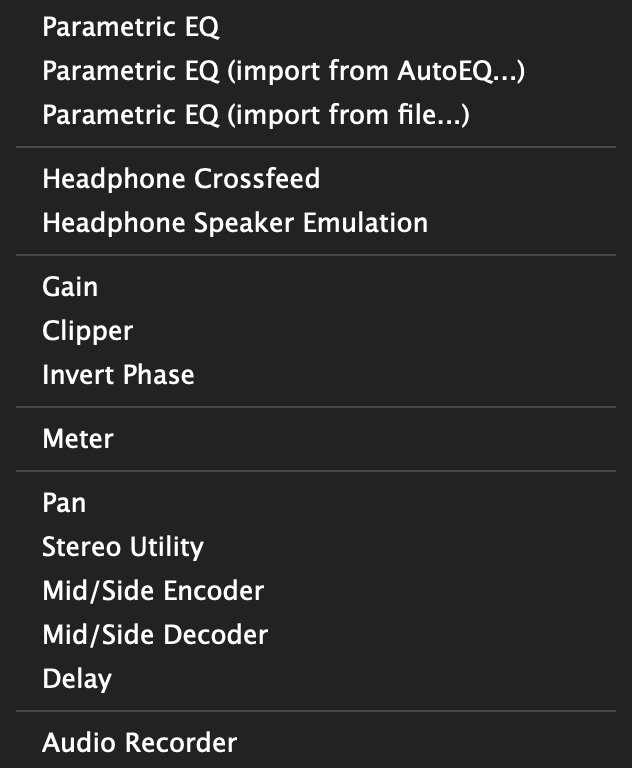
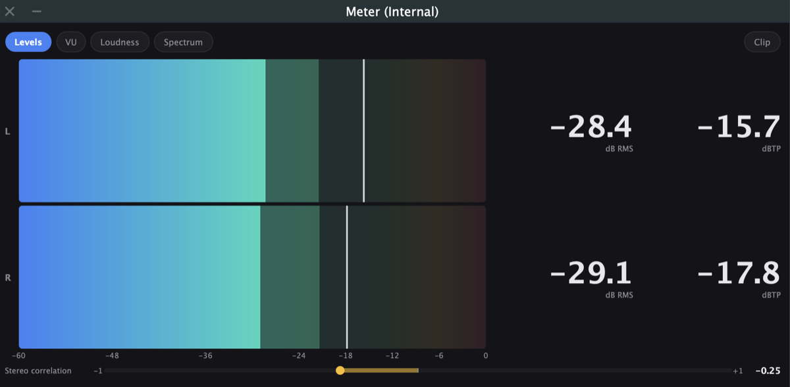
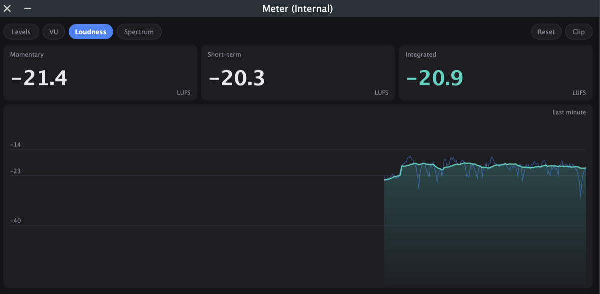
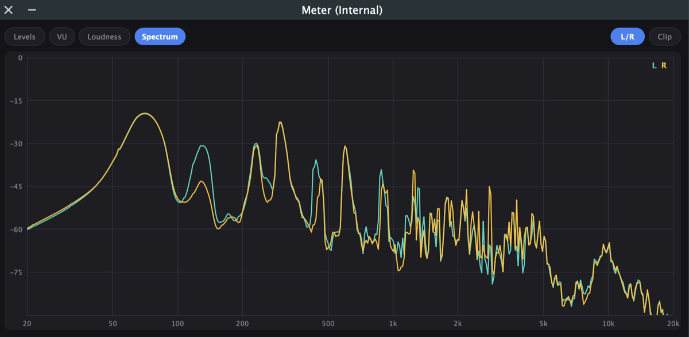

Run plug-ins on everything your Mac plays.
Curve is a free menu bar app that runs Audio Unit and VST3 plug-ins on all your Mac's audio, through low-latency loopback with no drivers to install. AutoEQ headphone correction is built in.
Completely free and open source. macOS 14.2 or later, on Apple silicon or Intel.

Headphone correction
Search the AutoEQ database for your headphones, pick a result, and Curve builds the Parametric EQ for you. You can also import a curve from AutoEQ, Squig.link or REW.
Add crossfeed for more natural stereo, or emulate mid-field studio speakers on headphones.
Headphone EQ and AutoEQ
Your plug-ins on everything
The plug-ins you already own can process music, films, calls and anything else your Mac plays.
Built for low latency. Curve taps your audio device's output directly, with no virtual device in the path, and you choose the buffer size.
Save each setup as a preset, then switch from the menu bar, a global shortcut or a MIDI controller.
Loopback and system audio

Instruments and amp sims
Keep a piano, synth or guitar rig ready without opening a DAW. Curve runs instrument plug-ins in the background and mixes them with your system audio.
Map plug-in parameters, bypass and preset changes to your controller with MIDI Learn.
MIDI control
Key features
Completely free and open source
Every feature is included, and the source code is on GitHub.
Unlimited chains
Connect as many plug-ins as you like, in any routing.
Audio Unit and VST3
Host effects and instruments in either format.
AutoEQ built in
Find a headphone profile by name, or import an EQ file.
Low-latency loopback
A direct tap on your audio device, with a buffer size you control.
No drivers
Bit-perfect loopback works with the audio hardware you already have.
Fast preset switching
Change setups from the menu bar, a keyboard shortcut or a MIDI controller.
Reconnects automatically
Audio comes back by itself when you reconnect your interface or wake your Mac.
Help in nine languages
The full guide is built into the app.
Utility plug-ins included
Curve comes with its own plug-ins, so you can start without owning any others.
- Headphones
- Parametric EQ, Crossfeed, Speaker Emulation
- Level
- Gain, Clipper, Invert Phase
- Metering
- Levels, VU, loudness in LUFS, spectrum
- Routing
- Pan, Stereo Utility, Mid/Side, Delay
- Recording
- Audio Recorder, to WAV

See what you're hearing
Connect Curve's Meter to any point in a chain. It shows levels and true peak, needle VU, loudness in LUFS, and a spectrum.



Get started
- Install. Download Curve and copy it to your Applications folder. It's signed and notarized, and it lives in your menu bar as .
- Choose your output. Select your headphones, speakers or interface in Audio Settings.
- Build a chain. Add plug-ins to the editor and connect them from Interface Loopback to Audio Output.
- Save a preset. It appears in the menu, ready to switch to.
Download for Mac Read the full guide
Requires macOS Sonoma 14.2 or later. macOS asks for permission the first time Curve captures system audio.